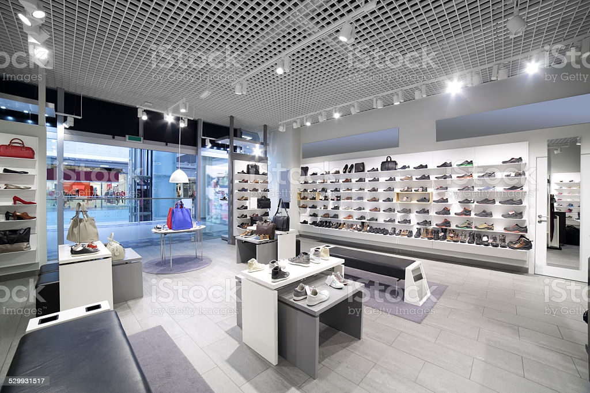

SHOES
A bakery is an establishment that produces and sells flour-based food baked in an oven such as bread, cookies, cakes, pastries, and pies. Some retail bakeries are also categorized as cafés, serving coffee and tea to customers who wish to consume the baked goods on the premises. Confectionery items are also made in most bakeries throughout the world.
WHERE WILL YOU FIND THEM
You will find the shoe store on the second floor next to the dool house.